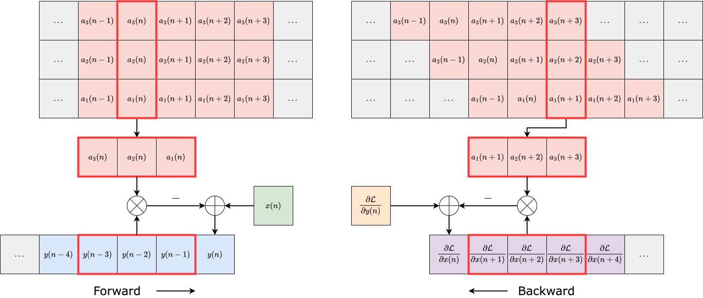

Abstract
Infinite impulse response filters are an essential building block of many time-varying audio systems, such as audio effects and synthesisers. However, their recursive structure impedes end-to-end training of these systems using automatic differentiation. Although non-recursive filter approximations like frequency sampling and frame-based processing have been proposed and widely used in previous works, they are approximations and cannot accurately reflect the gradient of the original system. We alleviate this difficulty by re-expressing a time-varying all-pole filter to backpropagate the gradients through itself, so the filter implementation is not bound to the technical limitations of automatic differentiation frameworks. This implementation can be employed within any audio system containing filters with poles for efficient gradient evaluation. We demonstrate its training efficiency and expressive capabilities for modelling real-world dynamic audio systems on a phaser, time-varying subtractive synthesiser, and feed-forward compressor. We make our code available and provide the trained audio effect and synth models in a VST plugin.

Figure 1: The forward (left) and backpropagation (right) flow chart of a third-order time-varying all-pole filter.
Listening Samples
We provide listening examples for
As discussed in more detail in the paper, we found
This website is best viewed using a Chromium based browser or Firefox.
Phaser (Electro-Harmonix Small Stone)

Figure 2: Discrete-time phaser model considered in this work, where K = 4. APF represents a time-varying all-pass filter with difference equation and BQ is a biquad filter.
Phaser paragraphs.
| Effect | Dry | Wet | Extracted LFO | LSTM-64 | Baseline |
|---|---|---|---|---|---|
| Melda Phaser Quasiperiodic LFO |
Samples were selected randomly from the test dataset. No normalization has been applied.
Time-varying Subtractive Synthesizer (Roland TB-303 Bass Line)
Figure 3: Diagram of the differentiable synth modelling process. Our time-domain filter component is shown in green.
Synth paragraphs.
| Example Number | Filter Config. | Inference Method | Target | TD (Ours) | FS 128 | FS 256 | FS 512 | FS 1024 | FS 2048 | FS 4096 | LSTM 64 |
|---|---|---|---|---|---|---|---|---|---|---|---|
| 1 | Coeff. | TD | N/A | ||||||||
| 1 | Coeff. | FS | N/A | N/A | |||||||
| 1 | Low-pass | TD | N/A | ||||||||
| 1 | Low-pass | FS | N/A | N/A | |||||||
| 1 | RNN | TD | N/A | N/A | N/A | N/A | N/A | N/A | N/A |
Individual samples were selected randomly from the test dataset. No normalization has been applied.
Feed-forward Compressor (LA-2A Leveling Amplifier)
Compressor paragraphs
| Effect | Dry | Wet | Extracted LFO | LSTM-64 | Baseline |
|---|---|---|---|---|---|
| EGFx Phaser Example 1 |

|
Samples were generated randomly from the test dataset. No normalization has been applied.
Plugins
We make the trained effect models accessible using the Neutone plugin and SDK. This enables most users to experiment with the models via a real-time VST plugin in their preferred digital audio workstation (DAW) on arbitrary input audio. Older and / or slower CPUs may struggle to run the models in real time.
Instructions:
- Download and install the Neutone plugin.
- Download a model file from the links below.
- Open the plugin in your preferred digital audio workstation.
- Click on "load your own" at the top of the Neutone plugin interface and select one of the models you just downloaded.